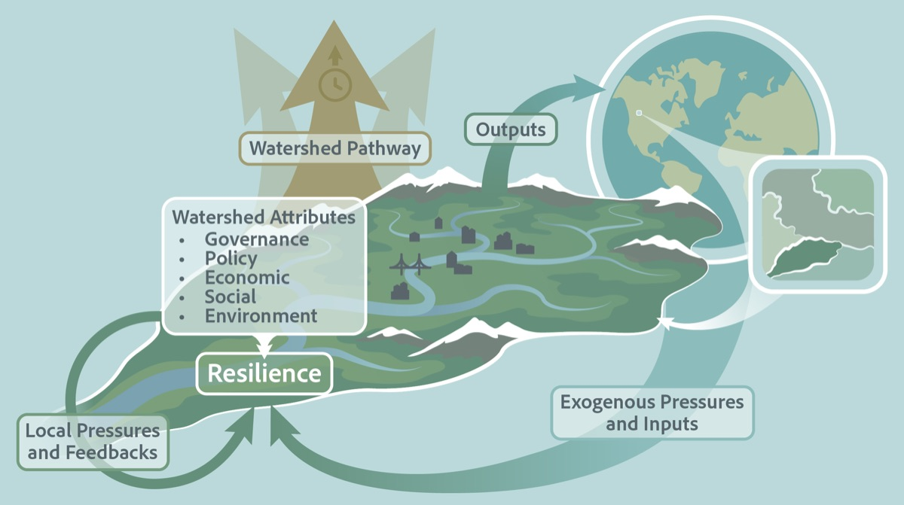
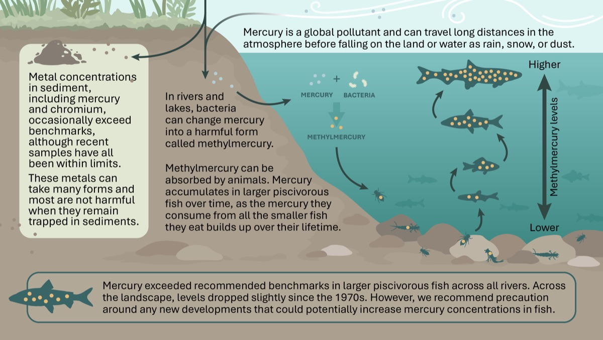
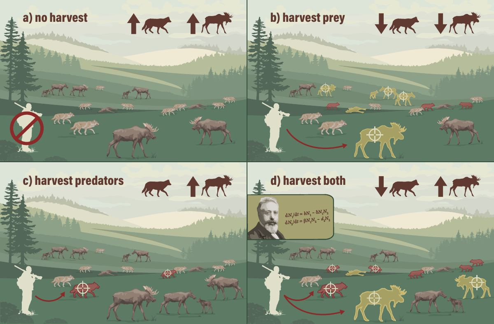
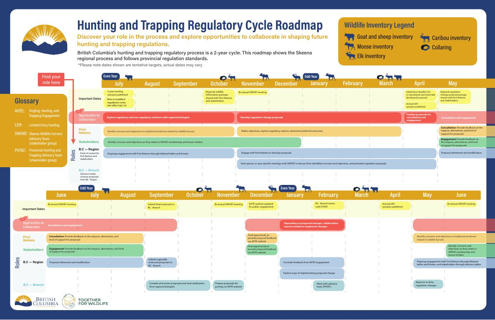
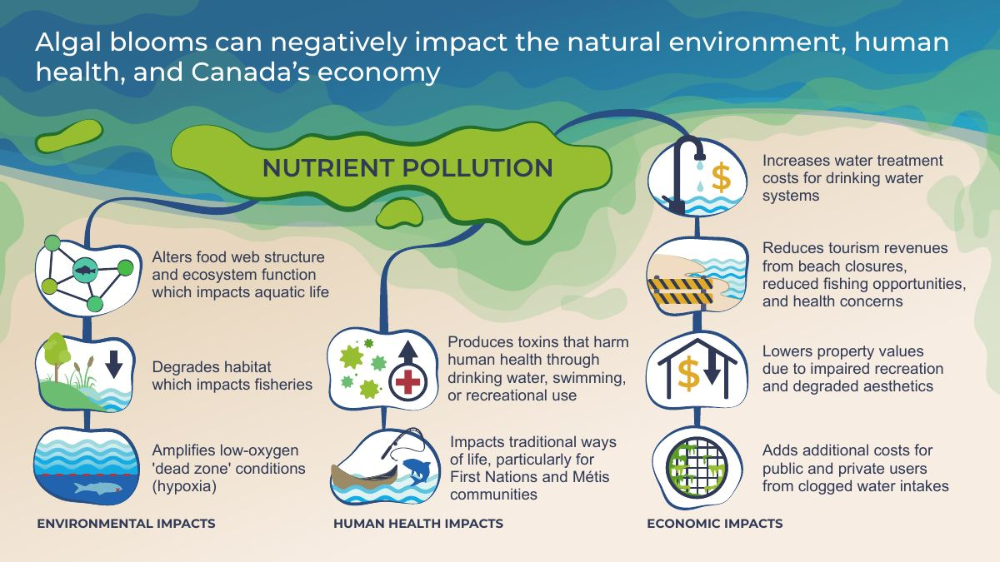

Nos services · 01 / 05
Infographieset illustrationscientifique
La traduction visuelle de contenus scientifiques et techniques en graphiques clairs et engageants.
Faites appel à nous si…
Quand les mots ne suffisent pas, les infographies viennent à la rescousse. Chacune est conçue à partir de la science, pour les personnes qui la liront.
- Votre rapport, votre article ou votre demande de financement a besoin d'une figure forte pour expliquer un concept, un processus ou un jeu de données.
- La direction, les praticiens ou le public ont besoin de vos résultats sans lire le rapport complet.
- Vous avez plus à dire que ce qu'une page permet, et moins qu'un rapport.
- Vous vous adressez à des jeunes ou à un groupe communautaire, qu'un document formel perdrait.
- Votre histoire se déroule sur un territoire, et une carte la porterait mieux qu'un texte.
Les infographies ne se résument pas à de jolies images. Elles sont un mélange stratégique d'art et de science, conçu pour abattre les murs de la tour d'ivoire.
Il a été démontré que les infographies augmentent l'impact de la science et sa mémorisation en s'appuyant sur l'attrait naturel des gens pour l'information visuelle. Elles sont aussi associées à des taux de citation plus élevés pour les articles scientifiques.
Cinq produits, chacun pour un besoin différent
Une figure, une infographie, une note d'information, un zine ou une carte narrative. Choisissez-en un pour voir ce que c'est, quand le choisir, et des exemples de notre travail.
Figure
Un graphique scientifique — diagramme, schéma ou illustration — conçu pour s'insérer dans un document plus large.
À choisir quandVotre rapport, votre article, votre infographie ou votre demande de financement a besoin d'un visuel fort pour expliquer un concept, un processus ou un jeu de données.
- Objectif
- Clarifier un concept, un processus ou un jeu de données précis.
- Format
- Un seul graphique vectoriel, livré en haute résolution (PNG, PDF ou EPS) pour votre document.
{kind=link}

Attributs et résilience d'un bassin versantFigureFacteurs qui influent sur les populations d'orignauxFigure complexe{kind=link}
{kind=link}

Le parcours du mercure dans un lacFigure de rapport{kind=link}

Prédateurs, proies et prélèvementsFigure{kind=link}

Cycle réglementaire de la chasse et du piégeageFigure de feuille de route{kind=link}

Proliférations d'algues et pollution par les nutrimentsFigure de FAQInfographie
Un document court, structuré visuellement, qui se suffit à lui-même. Le résumé d'une seule étude sur une demi-page est souvent appelé résumé graphique.
À choisir quandLa direction, les praticiens ou le public ont besoin de vos résultats ou de vos recommandations sans lire le rapport complet.
- Objectif
- Résumer des sujets, des recherches ou des informations complexes dans un format concis et accessible.
- Format
- Une à trois pages en portrait, un texte concis et des visuels d'appui, prêtes à imprimer ou à partager en PDF ou en PNG.
{kind=link}
{kind=link}
{kind=link}
{kind=link}
Note d'information
Le même objectif qu'une infographie, avec plus de texte que de visuels. Les clients l'appellent parfois encore infographie.
À choisir quandVous avez plus à transmettre que ce qu'une infographie peut contenir, et il faut un texte rédigé en paragraphes.
- Objectif
- Résumer des sujets complexes pour des décideurs, des praticiens, des organisations ou le public.
- Format
- Deux à quatre pages en portrait, un texte concis et des visuels d'appui, prêtes à imprimer ou à partager en PDF ou en PNG.
{kind=link}
{kind=link}
{kind=link}
Zine
Un petit livret illustré, au ton informel.
À choisir quandVous vous adressez à des jeunes ou à des groupes communautaires dans un cadre informel.
- Objectif
- Une communication scientifique accessible, sans obstacle à l'entrée.
- Format
- Un petit format imprimé, souvent A5 ou plus petit, imprimé en doubles pages comme un livret ordinaire ; illustré, au ton informel et créatif.
Lire le zine complet PDFPDF à venir
{kind=link}
{kind=link}
Carte narrative
Un récit numérique interactif, construit autour d'une carte, qui combine texte, images et données géographiques (ArcGIS).
À choisir quandL'objectif est la mobilisation du public ou le récit d'une organisation. Une dimension géographique s'y prête bien, sans être obligatoire.
- Objectif
- Mobiliser un large public autour d'une histoire qui se déroule dans l'espace.
- Format
- Une application web interactive (ArcGIS StoryMaps), qu'on parcourt en défilant, avec des cartes, des images, du texte et des médias intégrés.
Votre science doit-elle être vue ?
Dites-nous ce que votre public doit comprendre, et qui il est.